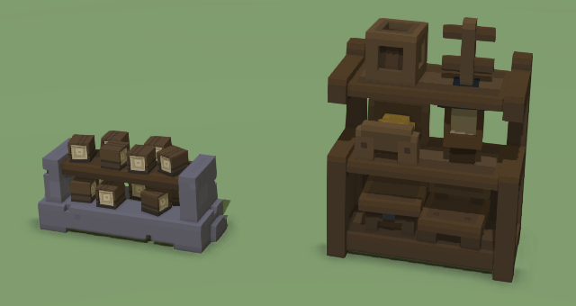
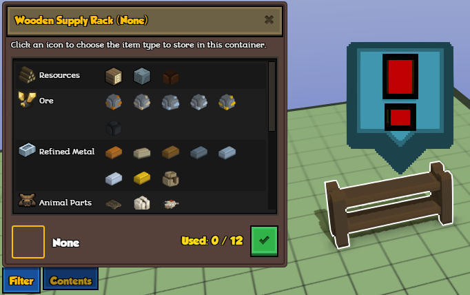
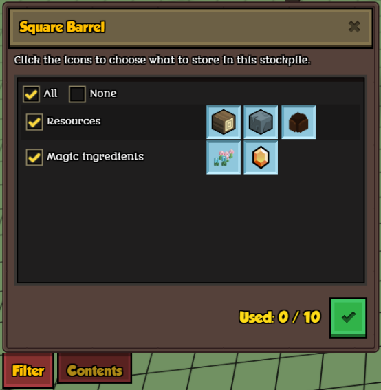

In Stonehearth there are several types of storage.
Stockpiles are defined in stonehearth/entities/construction/stockpile/stockpile.json. The stockpile component is added to them when they're created inside the game, because they need to calculate some parameters that can't be assigned by default in its JSON file. They also get the storage component upon creation.
The rest of storage entities are defined inside stonehearth/entities/containers, and their JSON files include the storage component (except for the resource piles, which are actually resource nodes, not storages).
Storage types
The storage types are defined inside stonehearth/components/storage/storage_component.lua:
local STORAGE_TYPES = {
CRATE = 'crate', -- Regular storage; no special behavior.
OUTPUT_CRATE = 'output_crate', -- Is not restocked, but crafters can place things there.
INPUT_CRATE = 'input_crate', -- Kept filled by hearthlings by taking items from other storage.
URN = 'urn', -- Regular storage; no special behavior.
CRAFTER_BACKPACK = 'crafter_backpack', -- Infinite-size backpack used for crafters when collecting ingredients.
BACKPACK = 'backpack', -- Private backpacks owned by characters.
ESCROW = 'escrow', -- Used to temporarily store items during shop transactions.
}
Creating storage items
Storage items are created like the rest of items. We can simply copy-paste an existing storage item from the stonehearth mod, and adjust its JSON files, models, etc. This is the storage component from large_crate.json:
...
"components" : {
"stonehearth:storage": {
"type": "crate",
"capacity": 32
},
...
},
...
Here we define the storage "type", which is one of the keys defined in the storage component (the ones in lowercase, see above), and the "capacity", the maximum number of items that this storage can contain. Easy enough.
We can also add storages to entities that are not crates, bins, or the like. For example, crafters have a special storage for ingredients, which is injected when a hearthling is promoted to a crafting job. It is located inside stonehearth/jobs/common/crafter_storage.
...
"stonehearth:storage": {
"type": "crafter_backpack",
"capacity": 128,
"public": false
},
...
Hearthlings also have a storage by default, assigned in the base_human.json mixin:
...
"stonehearth:storage": {
"type": "backpack",
"public": false,
"capacity": 4
},
...
And shops from the game master encounters also have their own storage (defined inside stonehearth/services/server/game_master/controllers/script_encounters/trader_entity.json):
...
"stonehearth:storage": {
"type": "escrow",
"capacity": 1000000,
"public": false
},
...
As you can see, we can define that they shouldn't be visible by adding "public" : false. This way we'll prevent the default UI for storages from showing up, and we can still access and control them in the background. By default all the storages are public.
Input and output boxes
As explained in the comments above for the storage types, input boxes are a special type of storage. Hearthlings will prioritize restocking items to them, even items that are already stored in another type of storage. Their filter list only allows for one filter to be enabled at a time.
This is useful for crafters, since other hearthlings can bring them ingredients and they won't have to walk so far to get them, and for building, since you can have a prioritized storage near your construction site so that the hearthlings that are building don't run out of resources.
Output boxes, on the other hand, can only be filled by crafters. They will place the items they've just crafted in the output boxes, and other hearthlings will pick those items from there and bring them to a storage with an appropiate filter (output boxes don't have much capacity, although they have the standard set of filters, since crafters can make items of any category).

Both storage types have been implemented with the ability to display their content. Stockpiles can also display the stored items, but they do so in a linear way, while for these storage types you can customize the display. If you copy the files of an input or output box, you will already have this defined, but let's take a look at the parameters anyway:
"stonehearth:storage": {
"type": "input_crate",
"capacity": 12,
"render_contents": true,
"filter_list": "stonehearth:ui:input_box:filters",
"is_single_filter": true
},
"render_info": {
"animation_table": "file(/data/rigs/entities/containers/input_bin/input_bin.json)"
},
"effect_list": {
"default": "file(/data/rigs/entities/containers/input_bin/effects/idle.json)"
}
They are pretty self-explanatory. "render_contents" : true will make it so that the contents of the storage are rendered (with this option you can create storages of type 'urn' or 'crate' that display their contents too).
The filter list points to a list of the allowed filters for this storage item, and "is_single_filter" : true will make it so that we can only enable one filter at a time. It will also remove the checkboxes for filter groups and will display an attention toast when there's no filter selected: 
Bear in mind that input boxes won't work as expected if they have "is_single_filter" set to false (they will throw errors). But other than that, we can have our crates and urns have single filters and/or a different list of filters too, using the "filter_list" option.
In order to display the items, we also need to add a rig to the storage. We do that by defining an "animation_table" inside the "render_info" component, and then assigning a default effect inside the "effect_list" component. This is an effect that plays a short animation (2 frames) to positionate the items on top of the model.
The rig will be composed by a set of bones which will determine where to display each item. The number of bones corresponds to the capacity of the storage, plus some mandatory helper bones.
The file that controls the rendering of the contents is stonehearth/renderers/storage/storage_renderer.lua. This file initializes the bones according to the rig, attaches the iconics to them, and updates the display as the items are put down or picked up. More on rigs and animations in their section of the guide. For the storage renderer, the bones need to be named in a certain way (prefixed by "ATTITEM", check storage_renderer.lua). If you copy an existing input / output box and reuse or extend its rig you won't have to worry about this.
Filters
By default all storages have the filters defined in stonehearth/ui/data/stockpile_filters.json. Input boxes have their filters defined in stonehearth/ui/data/input_box_filters.json. We can add our own new filter to those lists with a mixinto[1], or we can create our own list of filters and use it on existing or modded items.
Let's create a new filter list and add an alias for it in our manifest:
...
"aliases" : {
"ui:barrel:filters" : "file(ui/data/barrel_filters.json)"
},
...
The barrel_filters.json file would look like this:
{
"type": "index",
"stockpile": {
"resources": {
"display_name": "i18n(stonehearth:ui.game.zones_mode.stockpile.filters.resources)",
"filter": "resources",
"ordinal": 1,
"categories": {
"wood": {
"ordinal": 1,
"display_name": "i18n(stonehearth:ui.game.zones_mode.stockpile.filters.tooltip_wood)",
"icon": "/stonehearth/ui/game/modes/zones_mode/stockpile/images/taxonomy/wood.png",
"filter": "stockpile_wood"
},
"stone": {
"ordinal": 2,
"display_name": "i18n(stonehearth:ui.game.zones_mode.stockpile.filters.tooltip_stone)",
"icon": "/stonehearth/ui/game/modes/zones_mode/stockpile/images/taxonomy/stone.png",
"filter": "stockpile_stone"
},
"clay": {
"ordinal": 3,
"display_name": "i18n(stonehearth:ui.game.zones_mode.stockpile.filters.tooltip_clay)",
"icon": "/stonehearth/ui/game/modes/zones_mode/stockpile/images/taxonomy/clay.png",
"filter": "stockpile_clay"
}
}
},
"magic_ingredients": {
"display_name": "i18n(silent_woods:ui.game.zones_mode.stockpile.filters.magic_ingredients)",
"filter": "magic_ingredients",
"ordinal": 2,
"categories": {
"herb": {
"ordinal": 1,
"display_name": "i18n(silent_woods:ui.game.zones_mode.stockpile.filters.tooltip_herb)",
"icon": "/silent_woods/ui/game/modes/zones_mode/stockpile/images/taxonomy/herb.png",
"filter": "magic_ingredient herb"
},
"gem": {
"ordinal": 2,
"display_name": "i18n(silent_woods:ui.game.zones_mode.stockpile.filters.tooltip_gem)",
"icon": "/silent_woods/ui/game/modes/zones_mode/stockpile/images/taxonomy/gem.png",
"filter": "magic_ingredient gem"
}
}
}
}
}
Let's review the structure of the file:
Make sure to add the "type" : "index".
Create a "stockpile" key after that.
Add filter groups inside the "stockpile" key. These can be named anything, and will be used to group filters in the UI. They have a "display_name" for showing a label in the UI, a "filter", which is needed to identify the checkbox for that group and to enable/disable all that group's filters at the same time, an "ordinal" to order the groups in the UI from top to bottom, and a "categories" entry, under which we will add our filters.
For the "resources" group, we've reused some of the existing stonehearth filters. Each filter has an "ordinal" (to arrange the filter inside the group horizontally), a "display_name" for the tooltip, an "icon" to display in the UI, and an associated "filter". This filter corresponds to a tag or a group of tags that we write in our "material_tags" inside the entity_data inside "stonehearth:catalog". This way, we tell that the item should be restocked to storages with this filter enabled.
 If the storage has the "All" filter checked, the material tags will be ignored. If "None" is checked instead, none of the items will be restocked to that storage, and hearthlings will move any remaining items in it to other storages.
If the storage has the "All" filter checked, the material tags will be ignored. If "None" is checked instead, none of the items will be restocked to that storage, and hearthlings will move any remaining items in it to other storages.For the next group, we added a new one that didn't exist before, and called it "magic_ingredients". It has two filters inside it, which have 2 tags each for their "filter". Only items that have both tags inside their "material_tags" will fall under these filters. That way, if we have a herb that's not a magic_ingredient too, hearthlings won't be able to restock it to the container that makes use of this filter list.
Now let's add it to our storage item:
...
"components" : {
"stonehearth:storage": {
"type": "crate",
"capacity": 10,
"filter_list": "silent_woods:ui:barrel:filters"
},
...
},
...
Finally, we can check how our filters look in the UI: 
About patrollable items
You might have noticed that some of the storages from the game have a "stonehearth:town_patrol" key inside their entity_data. This key is used to designate items that should be patrolled by the combat units. Other entities, like farmer fields, also have this entity_data.
"stonehearth:town_patrol": {
"auto_patrol": true,
"patrol_pattern": "perimeter"
}
We can add this entity data to any entity that we would like the footmen to patrol. It must have "auto_patrol" set to true. The "patrol_pattern" is not really take into account at the moment. For the existing entities, it is set to "perimeter", but if the patrollable entity is small (e.g.: a small_crate), the combat units will only "visit" the entity, not turn around it.
This is good for cases where you have many of these objects in the game, to prevent small loops of patrolling. In the future, the "patrol_pattern" might allow a "point" value to replicate this behavior in a controlled manner (for example, if we wanted to have it for big objects too).
References
[1]: Example mod from a community member that adds many storage filters to the default lists https://discourse.stonehearth.net/t/mod-better-storage-v1-2-a23/21449